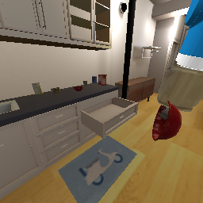
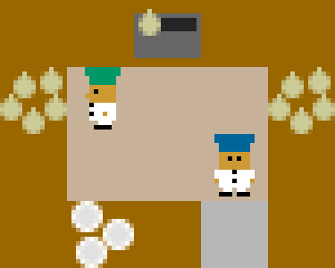

▶ NEW: Complete VirtualHome capability reference (20 rendered videos)
A hands-on guide to Habitat 3.0, Overcooked-AI, and Craftium — the candidate engines for an Interactive Online Policy Evaluation benchmark. A user policy acts in a world; a proactive assistant watches only the user's RGB stream and decides whether, when, and what to communicate; its message changes the future.
The benchmark needs diverse multi-step interaction tasks where a user physically acts and an assistant could help. The three engines span the fidelity/scale spectrum that question requires — from photorealistic homes to fast 2D coordination to open-ended voxel worlds.
Photorealistic 3D homes. SMPL-X humanoid + robots, egocentric RGB/depth, real manipulation & articulation (open fridge/drawers). Closest to real wearable-camera deployment.
Real-time 2D coordination. Two cooks, sequential recipe, 50 layouts, bundled human-play data. The cleanest testbed for when to speak & coordination.
Open-world voxel sandbox. Huge compositional action space, first-person RGB, fully Lua-moddable tasks. Best for long-horizon, open-ended assistance.
▶ Deep dive: the Habitat 3.0 atomic-components reference — scenes (168 houses, 9 examples), objects (16.6k), and an affordance catalog with egocentric videos.
A high-performance 3D simulator (FAIR) with photorealistic scenes, rigid-body physics, articulated objects, and a native SMPL-X human avatar + robots in multi-agent scenes. We drive long-horizon household tasks and render the agent's egocentric camera at every step.
A kinematic human avatar (AMASS walk cycles via HumanoidRearrangeController) tours a furnished apartment.
This is the user whose first-person stream the assistant consumes.
First-person RGB through a furnished room — the realistic visual stream the assistant watches.
A SMPL-X humanoid (the user) walks the home while a Fetch robot (the assistant) follows and observes — the benchmark's core two-policy setup, in a photorealistic HSSD home.
The agent follows the geodesic shortest path to a sequence of goals, emitting the egocentric RGB stream an assistant would watch as the user moves to a destination.
A real PARTNR episode in a photorealistic HSSD home, with the collaborative instruction: “Help me clean up the toys in bedroom. Place all the toy food, pencil case, file sorter, and toy vehicle on the table.” — the language-specified, multi-room household tasks the benchmark ultimately targets.
Each task's grounded PDDL plan (navigate → open cabinet/fridge → pick → place → …) runs with continuous oracle navigation between steps; we capture the robot's head camera every frame — real egocentric video of each distinct task, no keyframe gaps.
cabinet+fridge → bowl & fruit to table
relocate 5 objects to receptacles
move 3 items fridge↔counter
pick & place to goal
Habitat has no native blackboard, so we authored one: a board + 24 dirt marks, wiped by a scripted sponge sweep. 24/24 cleaned — an outcome the benchmark measures directly.

The Fetch suction gripper picks a bowl from an opened drawer — the kind of state change (open → grasp → relocate) that defines multi-step home tasks.
| Tasks | Home Assistant Benchmark (SetTable, TidyHouse, PrepareGroceries, Rearrange) in PDDL with stage-goals; Social Rearrangement & Social Navigation (robot + humanoid); PARTNR (100k language tasks); ObjectNav / PointNav / ImageNav / VLN / EQA. |
|---|---|
| Actions | Discrete + continuous base velocity; 7-DOF arm + suction/magic grasp; oracle skills (OracleNav, PddlApply); humanoid SMPL-X joint & pick actions. |
| Agents | SMPL-X humanoids (10 avatars) · robots Spot / Fetch / Stretch · native multi-agent. |
| Observations | Egocentric RGB / depth / semantic / panoptic · GPS+compass · detectors. |
| Diversity | HSSD (200+ scenes), ReplicaCAD, HM3D, MP3D · YCB + articulated objects (fridges, drawers, cabinets). |
The canonical human-AI coordination testbed (Carroll et al., NeurIPS 2019). Two cooks run a sequential recipe under time pressure: onion → pot ×3 → cook → wait → plate → deliver, looped for reward. We run goal-directed cooks across many layouts — each a different coordination problem.
shared pot 2 soups
split access 3 soups
ring + handoffs
narrow passage
central pots
open space
compact grid
minimal kitchen
asym. scenario
needs co-op 0 alone
can't solo 0 alone

plating a soup
| Task | Ordered soup-delivery loop over the horizon; branching recipes (onion/tomato) & bonus orders. |
|---|---|
| Actions | 6/player: N/S/E/W, STAY, context-dependent INTERACT; stepped as a joint action. |
| Agents | GreedyHumanModel, Random, FixedPlan, trained nets; bundled human-human play datasets. |
| Observations | Rendered RGB + featurized vector + lossless grid tensor. |
| Diversity | ~50 layouts + programmatic generation. |
A Minecraft-like engine (built on Luanti, ICML 2025) with a Gymnasium API, first-person RGB, no Java, and full Lua moddability. Best for a large compositional action space and long-horizon, open-ended tasks. All four below render real first-person video, headless.
gather wood in forest ✓
plant saplings ✓
place wood blocks ✓
explore dungeon ✓
cave exploration ✓
| Tasks | Built-in: ChopTree, ProcDungeons, Speleo, SpidersAttack, Room, OpenWorld. Custom (authored here as Lua mods): PlantTree, BuildHouse. Plus the open-ended craft/build/survive chain. Lua-extensible; PettingZoo multi-agent. |
|---|---|
| Actions | Raw: ~21 binary keys (move/jump/sneak/dig/place/drop/inventory/hotbar 1-9) + 2-D continuous mouse look. Per-task Discrete wrappers. |
| Observations | First-person RGB (configurable res), optional grayscale + 3-D voxel; pos/vel/pitch/yaw in info. |
| Diversity | Procedural worlds & dungeons, day/night, mobs, biomes; the whole Luanti modding ecosystem. |
make_rendering_env retry-on-blank wrapper that recreates the env until a launch renders — which reliably captures every task during good GPU windows.| Habitat 3.0 | Overcooked-AI | Craftium | |
|---|---|---|---|
| Visual | Photorealistic 3D, egocentric | 2D top-down | 3D voxel, first-person |
| Action space | Nav + 7-DOF arm + oracle skills | 6 discrete | ~21 keys + mouse |
| User model | SMPL-X humanoid / robot, oracle PDDL | GreedyHumanModel + human data | Scriptable / Lua / RL |
| Multi-agent | Native (human+robot) | Native (2 cooks) | PettingZoo |
| Tasks shown here | 4 oracle + wipe + humanoid + tour | 11+ layouts | ChopTree, PlantTree, BuildHouse, ProcDungeons |
| Best for | Realistic household assistance | When-to-speak, coordination | Open-ended long-horizon |
| Headless render | reliable (EGL) | reliable (CPU) | flaky EGL + retry wrapper |
Each engine has its own micromamba env under sims/. Representative commands:
# Habitat 3.0 micromamba run -n habitat python sims/habitat/task_hab_oracle.py set_table # solve a household task micromamba run -n habitat python sims/habitat/task_humanoid.py # SMPL-X user walking micromamba run -n habitat python sims/habitat/task_wipe_blackboard.py # custom wipe task # Overcooked-AI SDL_VIDEODRIVER=dummy micromamba run -n overcooked python sims/overcooked/task_soup_delivery.py SDL_VIDEODRIVER=dummy micromamba run -n overcooked python sims/overcooked/showcase.py # many layouts # Craftium (retry-on-blank render wrapper) micromamba run -n craftium-build python sims/minecraft/capture_choptree.py micromamba run -n craftium-build python sims/minecraft/capture_all.py # PlantTree / BuildHouse / ProcDungeons
Per-engine research notes & reproduction are in each RESEARCH.md / SETUP.md; a status
overview is in sims/TASKS.md.